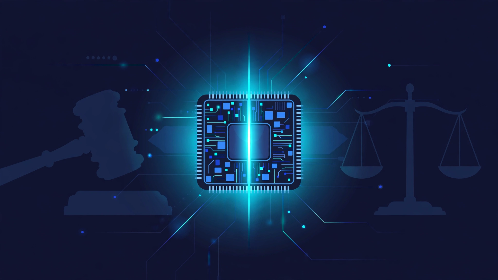

深度深读 · DEEP READ
董事会两次说不，接下来看法庭
董事会两次说不，请愿书近 20 万签名也没有投票权。12 月 1 日国会听证之后，决定黄仁勋命运的不再是董事会，而是法律。
DEEP TAKE · 本篇判断黄仁勋的权力在实践中绝对、在法律上脆弱：没有超级投票权、持股约 3.6%、没有继任计划。董事会已两次说不，接下来决定他命运的是传票、调查与 12 月 1 日的国会访谈。
英伟达 11 月 19 日收 145.98 美元（-3.3%，六连跌）
较 10 月 6 日高点 243.37 美元跌约 40%，六日蒸发约 6,690 亿美元市值
请愿签名逼近 20 万，但请愿不是股东投票
Q3 营收 1,158 亿美元（+103%），Q4 指引 1,300 亿美元
加州总检察长已发 调查传票，SEC 调查据报已开启
12 月 1 日黄仁勋接受三家众议院委员会记录访谈
